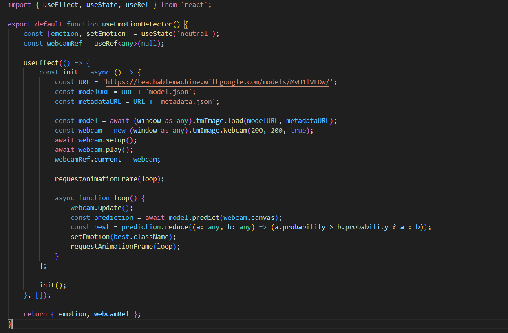
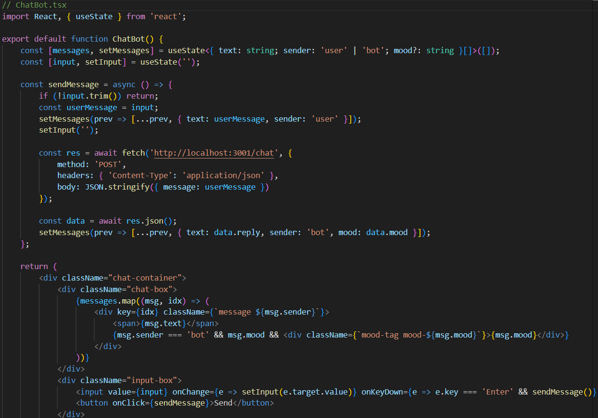
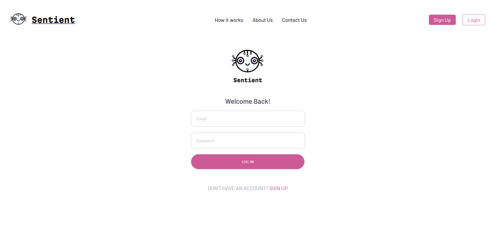
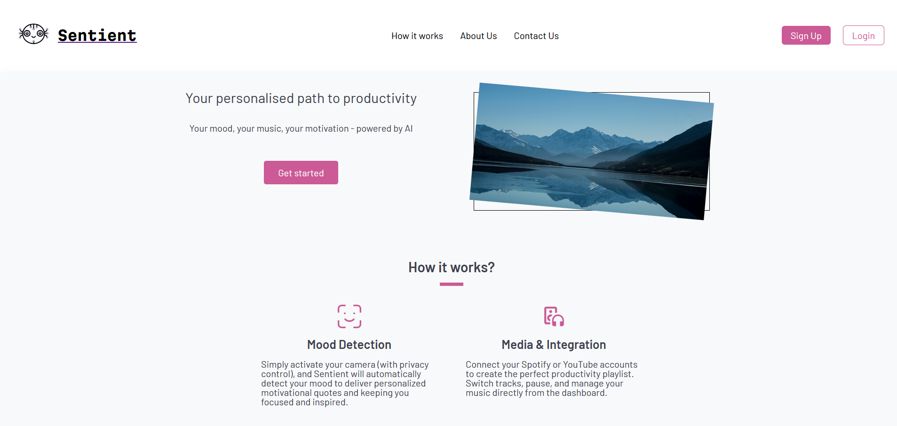
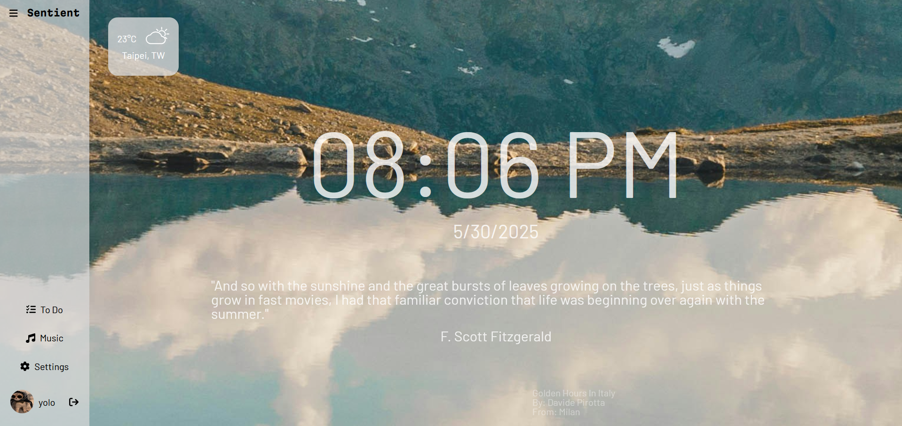
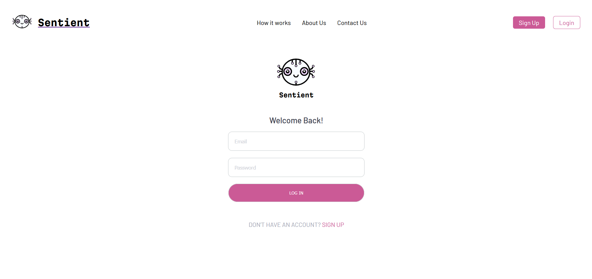
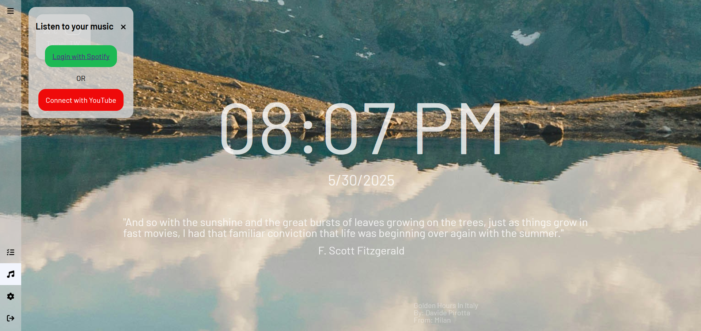

A tool to match a personalised music based on your mood.
Project Description
Picture this… you're facing a long day, feeling unfocused and unmotivated.
Tasks are piling up, music feels off, and you can't seem to find your rhythm. We get it, staying productive is tough.
That's why we created Sentient an AI-powered dashboard designed to understand your mood and help you stay inspired and organized, every single day.
Here's what Sentient stands for:
Personalized Motivation: analyzes your mood and delivers tailored quotes to keep you inspired.
Task Clarity: to-do lists that help you stay focused and productive.
Seamless Music Integration: to Spotify or YouTube and listen to playlists that match your vibe.
Smart Scheduling: track of tasks and events with an integrated calendar.
Weather Updates: what to expect for the day ahead.
Sentient was created to empower individuals to be their most productive and inspired selves because when your mood and mind are in sync, anything is possible.

Code for the Camera Detection

Code for the Chatbot

Create Account Page

Index page for the app

Home page after login

Login page

Page to connect to Spotify or YouTube
Tech Stack
Figma
Frontend: React.js
Styling: TailwindCSS
Backend: Express.js
API: Node.js
Database: MongoDB
Authentication, Data management and Backend Structure: AWS-Amplify
Hosting: Vercel and Netlify
Version Control: Git
What I have done:
Authentication & User Management
User registration and login system
Profile management with username and profile photo
Secure token-based authentication
Protected routes for authenticated users
Mood Detection & Personalization
Real-time emotion detection using webcam
AI-powered mood analysis (happy, sad, angry, neutral, confusion)
Personalized motivational quotes based on detected mood
Dynamic UI updates based on emotional state
Music Integration
Spotify integration with:
Play/pause controls
Track switching
Volume control
Shuffle and repeat modes
Mood-based music recommendations
YouTube player as an alternative
Music player toggle functionality
Weather Information
Real-time weather updates
Current temperature and "feels like" temperature
Weather conditions with icons
5-hour weather forecast
Location-based weather data
Detailed weather view with hourly breakdown
Task Management
Todo list functionality
Task creation and management
Task status tracking (important, normal, done, do not forget)
Task tagging system
Task prioritization
Time & Date Features
Real-time clock display
Current date display
Time-based UI updates
UI/UX Features
Responsive design with breakpoints for different screen sizes
Collapsible sidebar menu
Dynamic background images with attribution
Smooth animations and transitions
Dark/light mode support (based on system preferences)
Settings & Customization
User preferences management
Profile settings
Music player preferences
UI customization options
Background Features
Dynamic background images from Unsplash
Image attribution display
Location-based image selection
Navigation & Layout
Responsive navigation bar
Collapsible sidebar
Quick access menu
Profile section with user information
Data Management
Local storage for user preferences
Secure token storage
Session management
Data persistence
API Integrations
Spotify API for music
Weather API for forecasts
Unsplash API for backgrounds
Quotes API for motivational content
Note: Some features mentioned in the welcome page (like calendar integration and smart scheduling) appear to be planned but not fully implemented in the current codebase. The core functionality focuses on mood detection, music integration, weather updates, and basic task management.
What I could improve.
Add a chatbot to the app for personalized interactions.
Use Deepface, a Face recognition library which supports emotion analysis, for more accurate mood detection.
Add a calendar integration for task scheduling and reminders.